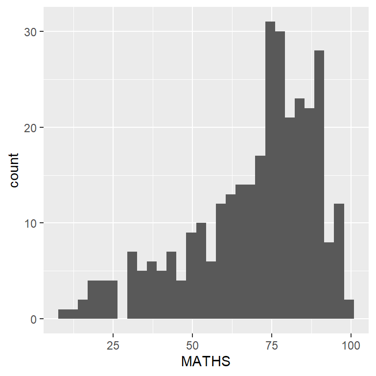
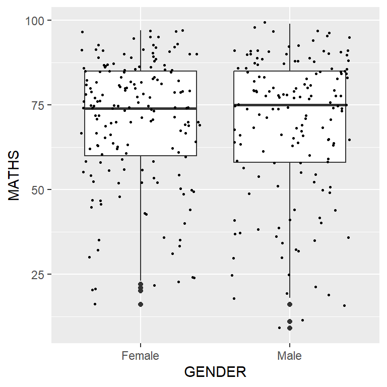
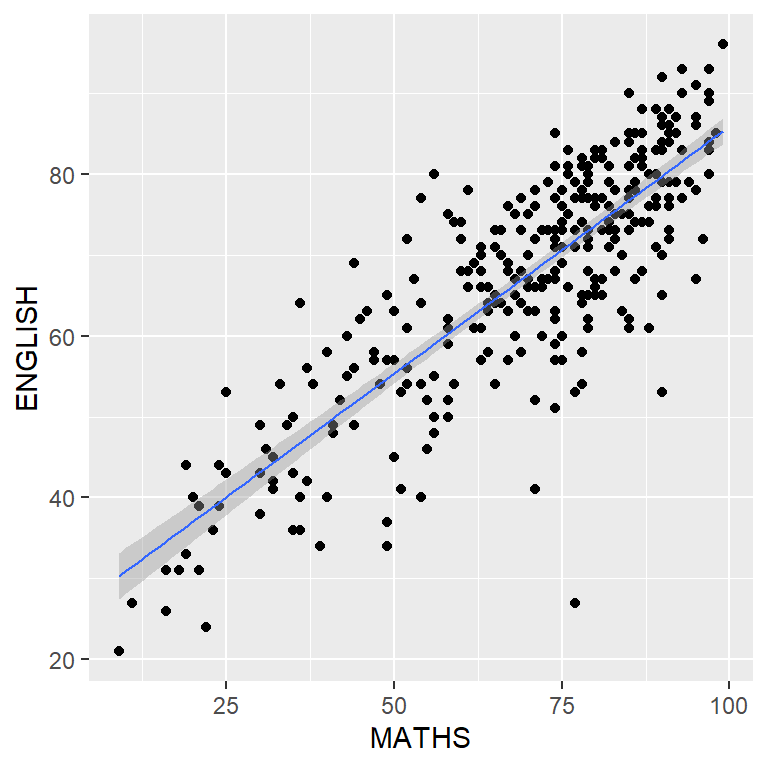

pacman::p_load(tidyverse,dplyr)Hand-on1
exam_data <- read_csv("data/Exam_data.csv")
#glimpse(exam_data)
#View(exam_data)Year end examination grades of a cohort of primary 3 students from a local school.
There are a total of seven attributes. Four of them are categorical data type and the other three are in continuous data type.
The categorical attributes are: ID, CLASS, GENDER and RACE.
The continuous attributes are: MATHS, ENGLISH and SCIENCE.
R Graphics
hist(exam_data$MATHS)ggplot2
ggplot(data=exam_data, aes(x = MATHS)) +
geom_histogram(bins=10,
boundary = 100,
color="black",
fill="grey") +
ggtitle("Distribution of Maths scores")What is a statistical graphic?
Grammar of graphics defines the rules of structuring mathematical and aesthetic elements into a meaningful graph.
Two principles
Graphics = distinct layers of grammatical elements
Meaningful plots through aesthetic mapping
Essential Grammatical Elements in ggplot2
A Layered Grammar of Graphics
- Data: The dataset being plotted.
- Aesthetics take attributes of the data and use them to influence visual characteristics, such as position, colours, size, shape, or transparency.
- Geometrics: The visual elements used for our data, such as point, bar or line.
- Facets split the data into subsets to create multiple variations of the same graph (paneling, multiple plots).
- Statistics, statiscal transformations that summarise data (e.g. mean, confidence intervals).
- Coordinate systems define the plane on which data are mapped on the graphic.
- Themes modify all non-data components of a plot, such as main title, sub-title, y-aixs title, or legend background.
ggplot(data=exam_data)
Notice that a blank canvas appears.
ggplot()initializes a ggplot object.The data argument defines the dataset to be used for plotting.
If the dataset is not already a data.frame, it will be converted to one by `fortify()
Essential Grammatical Elements in ggplot2
Geometric Objects: [geom_bar]

ggplot(data=exam_data,
aes(x=RACE)) +
geom_bar()Geometric Objects: geom_dotplot
In a dot plot, the width of a dot corresponds to the bin width (or maximum width, depending on the binning algorithm), and dots are stacked, with each dot representing one observation.
The code chunk below performs the following two steps:
scale_y_continuous()is used to turn off the y-axis, and- binwidth argument is used to change the binwidth to 2.5.
ggplot(data=exam_data, aes(x = MATHS)) +
geom_dotplot(binwidth=2.5, dotsize = 0.5) +
scale_y_continuous(NULL, breaks = NULL)Geometric Objects: geom_histogram()
In the code chunk below, [geom_histogram()] is used to create a simple histogram by using values in MATHS field of exam_data.
Note
Note that the default bin is 30.

ggplot(data=exam_data,
aes(x = MATHS)) +
geom_histogram()Modifying a geometric object by changing geom()
In the code chunk below,
- bins argument is used to change the number of bins to 20,
- fill argument is used to shade the histogram with light blue color, and
- color argument is used to change the outline colour of the bars in black
ggplot(data=exam_data,
aes(x= MATHS)) +
geom_histogram(bins=20,
color="black",
fill="light blue") Modifying a geometric object by changing aes()
- The code chunk below changes the interior colour of the histogram (i.e. fill) by using sub-group of aesthetic().
Note
This approach can be used to colour, fill and alpha of the geometric.
ggplot(data=exam_data,
aes(x= MATHS,
fill = GENDER)) +
geom_histogram(bins=20,
color="grey30")Geometric Objects: geom-density
[geom-density()]computes and plots kernel density estimate, which is a smoothed version of the histogram.
It is a useful alternative to the histogram for continuous data that comes from an underlying smooth distribution.
The code below plots the distribution of Maths scores in a kernel density estimate plot.
ggplot(data=exam_data,
aes(x = MATHS)) +
geom_density() The code chunk below plots two kernel density lines by using colour or fill arguments of aes()
ggplot(data=exam_data,
aes(x = MATHS,
colour = GENDER)) +
geom_density()Geometric Objects: geom_boxplot
- [
geom_boxplot()]displays continuous value list.
ggplot(data=exam_data,
aes(y = MATHS,
x= GENDER)) +
geom_boxplot() Notches are used in box plots to help visually assess whether the medians of distributions differ. If the notches do not overlap, this is evidence that the medians are different.
The code chunk below plots the distribution of Maths scores by gender in notched plot instead of boxplot.
ggplot(data=exam_data,
aes(y = MATHS,
x= GENDER)) +
geom_boxplot(notch=TRUE)geom objects can be combined
The code chunk below plots the data points on the boxplots by using both geom_boxplot() and geom_point().

ggplot(data=exam_data,
aes(y = MATHS,
x= GENDER)) +
geom_boxplot() +
geom_point(position="jitter",
size = 0.5)Geometric Objects: geom_violin
[geom_violin] is designed for creating violin plot. Violin plots are a way of comparing multiple data distributions. With ordinary density curves, it is difficult to compare more than just a few distributions because the lines visually interfere with each other. With a violin plot, it’s easier to compare several distributions since they’re placed side by side.
The code below plot the distribution of Maths score by gender in violin plot.
ggplot(data=exam_data,
aes(y = MATHS,
x= GENDER)) +
geom_violin() Geometric Objects: geom_violin() and geom_boxplot()
The code chunk below combined a violin plot and a boxplot to show the distribution of Maths scores by gender.
ggplot(data=exam_data,
aes(y = MATHS,
x= GENDER)) +
geom_violin(fill="light blue") +
geom_boxplot(alpha=0.5) Geometric Objects: geom_point()
- [
geom_point()] is especially useful for creating scatterplot. - The code chunk below plots a scatterplot showing the Maths and English grades of pupils by using
geom_point().
ggplot(data=exam_data,
aes(x= MATHS,
y=ENGLISH)) +
geom_point()Statistics, stat
- The Statistics functions statistically transform data, usually as some form of summary. For example:
- frequency of values of a variable (bar graph)
- a mean
- a confidence limit
- There are two ways to use these functions:
- add a
stat_()function and override the default geom, or - add a
geom_()function and override the default stat.
- add a
Working with stat - the stat_summary() method
The code chunk below adds mean values by using [stat_summary()] function and overriding the default geom.
ggplot(data=exam_data,
aes(y = MATHS, x= GENDER)) +
geom_boxplot() +
stat_summary(geom = "point",
fun.y="mean",
colour ="red",
size=4) Working with stat - the geom() method
The code chunk below adding mean values by using geom_() function and overriding the default stat.

ggplot(data=exam_data,
aes(y = MATHS, x= GENDER)) +
geom_boxplot() +
geom_point(stat="summary",
fun.y="mean",
colour ="red",
size=4) How to add a best fit curve on a scatterplot?
In the code chunk below, [geom_smooth()] is used to plot a best fit curve on the scatterplot.
- The default method used is loess.
ggplot(data=exam_data,
aes(x= MATHS, y=ENGLISH)) +
geom_point() +
geom_smooth(size=0.5)The default smoothing method can be overridden as shown below.

ggplot(data=exam_data,
aes(x= MATHS,
y=ENGLISH)) +
geom_point() +
geom_smooth(method=lm,
linewidth=0.5)Facets
Facetting generates small multiples (sometimes also called trellis plot), each displaying a different subset of the data.
Facets are an alternative to aesthetics for displaying additional discrete variables.
ggplot2 supports two types of factes, namely:
facet_grid()andfacet_wrap.
facet_wrap()
[
facet_wrap] wraps a 1d sequence of panels into 2d.This is generally a better use of screen space than facet_grid because most displays are roughly rectangular.
The code chunk below plots a trellis plot using facet-wrap().
ggplot(data=exam_data,
aes(x= MATHS)) +
geom_histogram(bins=20) +
facet_wrap(~ CLASS)facet_grid() function
[
facet_grid()] forms a matrix of panels defined by row and column facetting variables.It is most useful when you have two discrete variables, and all combinations of the variables exist in the data.
The code chunk below plots a trellis plot using facet_grid().

ggplot(data=exam_data,
aes(x= MATHS)) +
geom_histogram(bins=20) +
facet_grid(~ CLASS)Coordinates
The Coordinates functions map the position of objects onto the plane of the plot.
There are a number of different possible coordinate systems to use, they are:
- [
coord_cartesian()]: the default cartesian coordinate systems, where you specify x and y values (e.g. allows you to zoom in or out). - [
coord_fixed()]: a cartesian system with a “fixed” aspect ratio . - [
coord_quickmap()](: a coordinate system that approximates a good aspect ratio for maps.
- [
By the default, the bar chart of ggplot2 is in vertical form.
ggplot(data=exam_data,
aes(x=RACE)) +
geom_bar()The code chunk below flips the horizontal bar chart into vertical bar chart by using coord_flip().

ggplot(data=exam_data,
aes(x=RACE)) +
geom_bar() +
coord_flip()How to change to the y- and x-axis range?
The code chunk below fixed both the y-axis and x-axis range from 0-100.
ggplot(data=exam_data,
aes(x= MATHS, y=ENGLISH)) +
geom_point() +
geom_smooth(method=lm,
size=0.5) +
coord_cartesian(xlim=c(0,100),
ylim=c(0,100))Themes
- Themes control elements of the graph not related to the data. For example:
- background colour
- size of fonts
- gridlines
- colour of labels
- Built-in themes include:
theme_gray()(default)theme_bw()theme_classic()
- A list of theme can be found at this link.
- Each theme element can be conceived of as either a line (e.g. x-axis), a rectangle (e.g. graph background), or text (e.g. axis title).
The code chunk below plot a horizontal bar chart using theme_gray()
ggplot(data=exam_data,
aes(x=RACE)) +
geom_bar() +
coord_flip() +
theme_gray()A horizontal bar chart plotted using theme_classic().
ggplot(data=exam_data,
aes(x=RACE)) +
geom_bar() +
coord_flip() +
theme_classic()